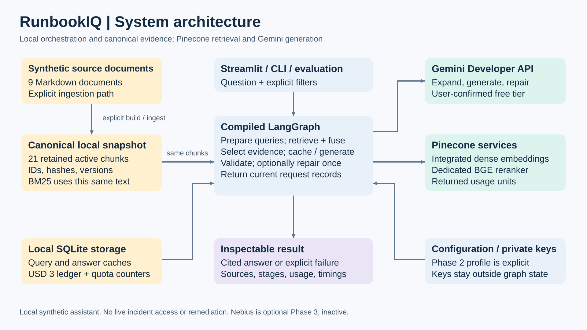
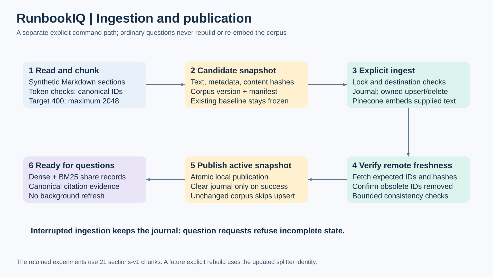
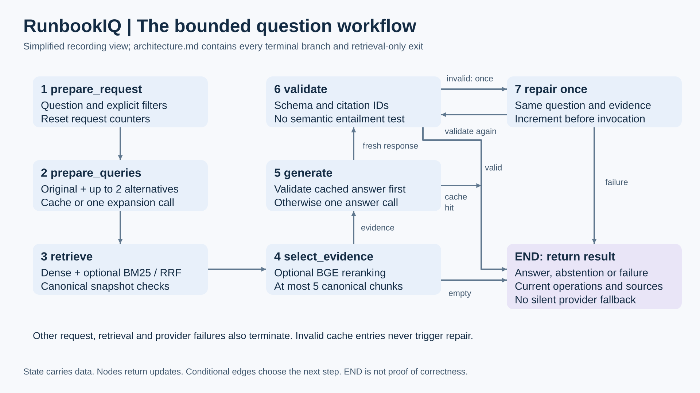
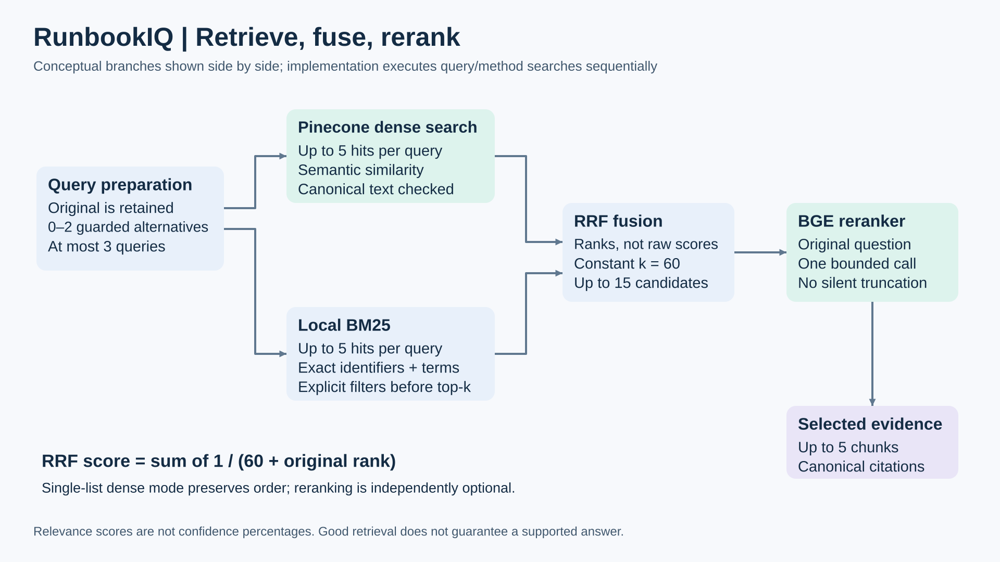
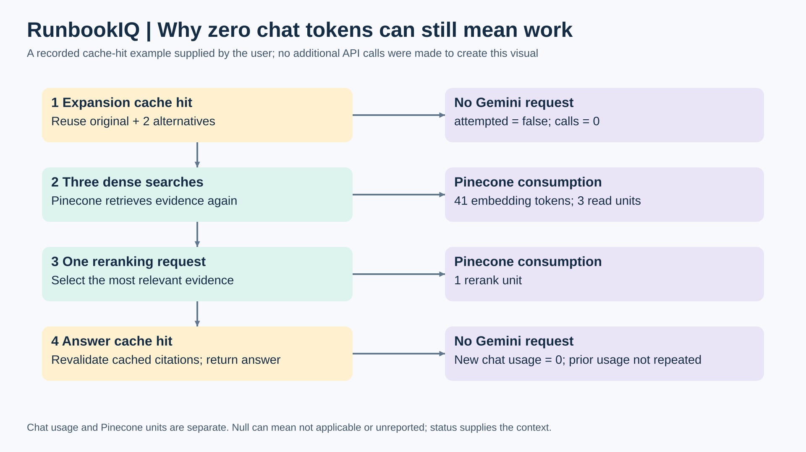

RunbookIQ architecture visuals
Five recording visuals. Open an individual SVG for a clean view, or use its PNG in an editor. These simplified views accompany the complete Mermaid diagrams in architecture.md. No network resources or model calls are used by this page.





Also available: data contracts, full architecture guide, and recording kit.